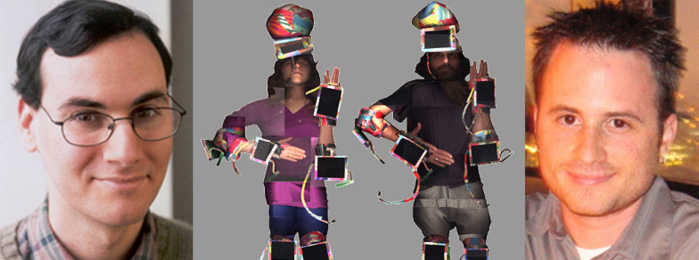

|
Pace Digital Gallery is pleased to host Programmable Media II: Networked Music
a free public event featuring
a symposium and commissioned performances
presented by Turbulence.org
Friday
April 11th, 10:00am to 6:00pm
Pace University, Multipurpose Room, 1 Pace Plaza
Programmable Media II: Networked Music will take place in Second Life
as well as at Pace University. You can access
it in Second Life
from 10:00am (EST) to 6:00pm at
this link.
PANELISTS:
Jason Freeman, Dan Trueman, Peter Traub, Zach Layton, Sawako Kato, Helen Thorington, LoVid, Tobias c. van Veen, and Adam Nash
with PERFORMANCES by: Jason Freeman with Andrew Beck and Mark T. Godfrey,
and Tobias c van Veen
~~~~~~~~~~~~~~~~~~~~~~~~~~~~~~~~~~~~~~~~~~~~~~~~~~~~~
MORE INFO and CONTACT:
click for symposium program - pdf format
click for artists' bios
click for the Turbulence.org Networked Music Review
click for the Turbulence.org Networked Performance Blog
CONTACT:
Helen Thorington: newradio[at]turbulence.org or Jillian McDonald: jmcdonald2[at]pace.edu
Registration is encouraged: email: turbulence[at]turbulence.org
~~~~~~~~~~~~~~~~~~~~~~~~~~~~~~~~~~~~~~~~~~~~~~~~~~~~~
DIRECTIONS:
4,5,6 to Brooklyn Bridge/City Hall subway station. Walk south
on Park Row to Spruce Street, turn left and enter Pace University building
on Spruce near Gold Street. Turn left inside building and look for the Multipurpose
Room. Signs will be posted in the building, and security personnel can
also guide the way.
~~~~~~~~~~~~~~~~~~~~~~~~~~~~~~~~~~~~~~~~~~~~~~~~~~~~~
This event is made possible with funding from the New York State Music Fund, established by the New York State Attorney
General at Rockefeller Philanthropy Advisors, and with public funds from the New York City Department of Cultural Affairs.

|